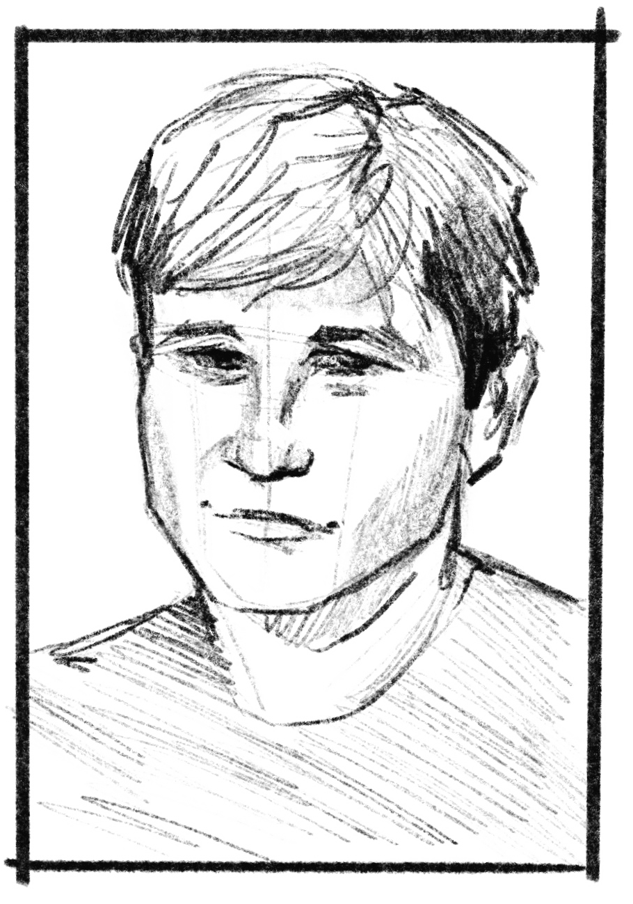

N.Y. based writer, photographer, and filmmaker.
I like slow things and simple things and books as well.
Reference points include Kelly Reichardt, Josh Kern,
Sam Shepard, and Milan Kundera.
contact
mattkoebele@gmail.com

Sketches by Ynes Lopez